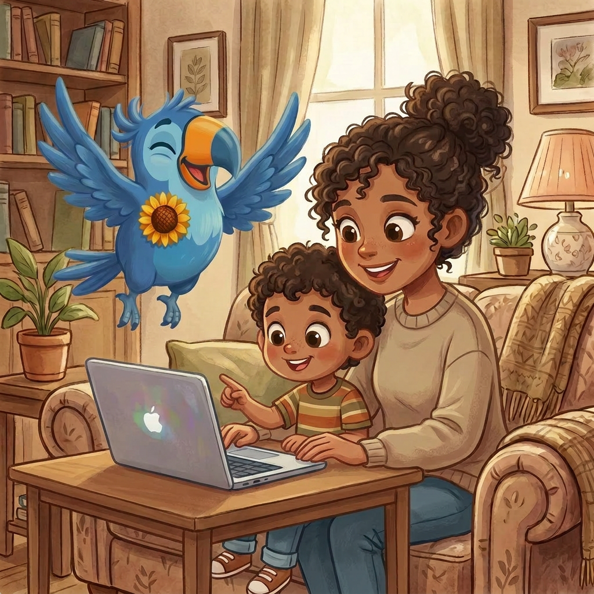
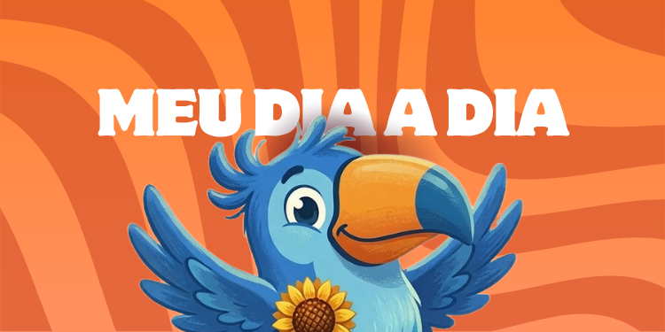
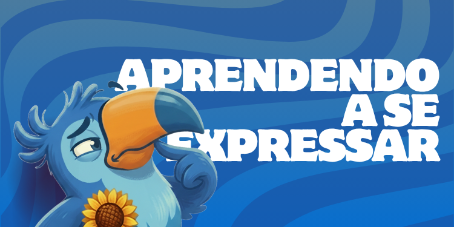

Aprendendo com alegria & do seu jeito!
Um espaço acolhedor pensado para crianças com TEA desenvolverem suas habilidades socioemocionais de forma divertida, segura e no próprio ritmo.

Tecnologia feita com cuidado e propósito
O TEKO é uma plataforma de aprendizagem socioemocional criada para que crianças de 6 a 10 anos com Transtorno do Espectro Autista (TEA) possam desenvolver habilidades emocionais e sociais de forma divertida, segura e acolhedora.
Por meio de atividades interativas, jogos e um assistente virtual inteligente, o TEKO guia cada criança no seu próprio ritmo, respeitando suas necessidades e celebrando cada conquista.
Conhecer a plataformaFeito com cuidado para cada criança
Cada detalhe foi pensado para proporcionar conforto, segurança e aprendizado real.
Ambiente Seguro
Conteúdo pensado especialmente para crianças com TEA, respeitando o ritmo e as necessidades de cada uma. Sem anúncios, sem distrações desnecessárias.
Aprendizado Lúdico
Atividades interativas e jogos que transformam o aprendizado emocional em uma experiência divertida, com progressão adaptada a cada criança.
Para Toda a Família
Painel exclusivo para responsáveis acompanharem o progresso e entenderem o desenvolvimento da criança com relatórios simples e claros.

e desenvolvimento
desenvolvimento
atendida
acessível
E não para por aí...
Uma IA feita para acolher.
O TEKO.IA conversa com sua criança, responde dúvidas e apoia o aprendizado a qualquer hora — com linguagem simples, calma e adaptada para o TEA.
Testar agoraNossa Metodologia
Para criar o TEKO, realizamos pesquisas aprofundadas sobre educação socioemocional e analisamos as necessidades reais das crianças com TEA. A partir desses dados, estruturamos três pilares de desenvolvimento.
Reconhecimento e expressão emocional

Autonomia e habilidades sociais

Linguagem e interação social
Histórias que nos motivam
O TEKO ajudou meu filho a identificar emoções que ele tinha dificuldade de nomear. É uma ferramenta incrível, fácil de usar e ele ama o mascote!
Como educadora, recomendo o TEKO para todas as famílias que acompanho. A metodologia é clara, respeitosa e muito bem pensada para as especificidades do TEA.
A interface é limpa e minha filha consegue navegar sozinha, sem precisar de ajuda. A parte de comunicação fez uma diferença enorme no cotidiano dela.
Cada criança merece
aprender do seu jeito
Acesse gratuitamente e descubra como o TEKO pode apoiar o desenvolvimento emocional e social da sua criança com TEA.
Gratuito · Sem necessidade de cartão · Pronto para usar
Ficou com dúvidas?
Entre em contato!
Estamos aqui para te ajudar. Fale com a gente pelo WhatsApp ou e-mail.